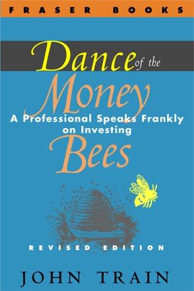

约翰·特兰（John Train，1928—2022）是美国投资顾问、作家，也是《巴黎评论》（The Paris Review）的创始编辑之一。他在纽约创办了Train, Smith Investment Counsel投资公司，长期担任多家新兴市场基金的董事。作为作家，他为《华尔街日报》《福布斯》《金融时报》《纽约时报》等知名媒体撰写了数百篇专栏，并出版了包括《金钱大师》（The Money Masters）、《新金钱大师》（The New Money Masters）在内的十余部投资著作。《金钱蜜蜂之舞》最初于1974年由哈珀与罗出版公司（Harper & Row）以精装本发行，后收入“反向观点图书馆”（The Contrary Opinion Library）系列，由弗雷泽出版公司（Fraser Publishing）于2000年再版，ISBN为9780870341458，全书约210页。
这本书的书名来自一个生物学隐喻：蜜蜂在外出觅食归来后，会以一种特定的“摇摆舞”（waggle dance）向蜂巢中的同伴传递蜜源的方位与丰饶程度——蜂群越兴奋，说明收获越大。特兰借此比喻描述华尔街的运作逻辑：投资经理们也像蜜蜂一样，在被某只股票的前景点燃时，会用言语、报告、推介和聚会中的激动情绪向市场传递信号。但这个比喻的真正锋芒，在于它暗含了一个警告：蜜蜂的“舞蹈”能够准确引导同伴找到真实的蜜源，而华尔街的“舞蹈”却往往只是情绪的放大与传染——它所引导的方向，未必是真正的价值所在。这一洞察早于行为金融学作为一门学科成形早了将近二十年。
特兰在书中以一位资深投资从业者的身份直白地剖析市场现实，口吻诚恳而不失犀利。他明确表达了对若干类型资产和企业的偏好：具有稳固特许经营权的大众消费品公司、优质的小型专业企业，以及作为保守对冲工具的债券。他同时警告读者远离那些依赖强势工会的企业，认为劳资关系的结构性摩擦会长期侵蚀股东价值。这些判断带有特兰鲜明的个人立场，但结合他多年亲身管理资金的经验，自有一种实战派的说服力。书中的写作风格简洁直接，摒弃了学术上的公式堆砌，更接近一位老练职业投资人在私下谈话中才会说出的真心话——这也正是本书书名中“坦诚”（frankly）一词的由来。
特兰在投资界更广为人知的身份，是《金钱大师》的作者——那本书对本杰明·格雷厄姆、沃伦·巴菲特、约翰·邓普顿、菲利普·费雪等九位顶级投资人的思想做了深入的个案研究，已成为价值投资阅读清单上的经典。《金钱蜜蜂之舞》则是他的早期作品，代表了他对整个投资文化与市场心理的宏观反思，两者相互补充。对于今天的读者而言，这本书的历史价值不仅在于它的观点，更在于它提供了一个难得的视角：一个亲历了1970年代初那场严酷熊市的专业人士，如何在市场的骚动与幻灭之后，用冷静而带有人文关怀的笔触，重新审视“投资”这件事的本质。